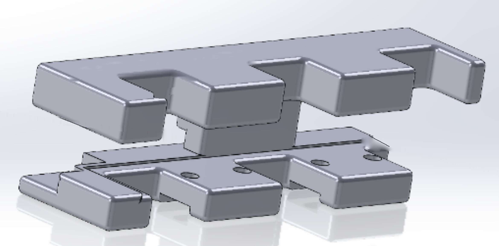

High-Precision Measurement Fixture
A handheld fixture for micrometer and caliper inspection of rectangular nickel alloy plates. I designed it in SolidWorks, printed it with fused deposition modeling, and refined it over more than 20 versions with the operator who uses it.
Requirements

Rectangular nickel alloy plate, roughly the size of a TV remote.
Every plate is checked with micrometers and calipers before it moves on. There was no existing fixture for this part, so the design started from a blank sketch and a list of constraints.
| Requirement | Reason |
|---|---|
| Hold the plate rigidly during measurement | Any movement shows up directly as measurement error. |
| No hard contact with the plate surface | The nickel alloy scratches easily, and a scratched plate fails inspection. |
| Caliper access at every measurement location | The operator takes several readings per plate without removing it. |
| Comfortable to hold | Operators pick it up for every plate, many times an hour. |
| Quick and cheap to make | Printing made each new version cheap and fast to test on the line. |
Design Decisions

Exploded view of the fixture in SolidWorks.
- Magnetic retention. Magnets hold the plate in place, and every magnet and screw is positioned so no fastener can touch the plate surface.
- Caliper gaps. Openings are sized for the caliper jaws at each measurement location, so every reading can be taken with the plate seated.
- Rear cutout. Gives the caliper a flat surface to rest against, which keeps it square to the plate and makes readings repeatable.
- Relief divot. Clears the body of the digital caliper so it never bumps the fixture mid-measurement.
- 1mm locating lip. Added early on at the operator's suggestion. It noticeably improved how stable the plate sits in the fixture.
Testing and Iteration
I planned for a handful of prototypes. It took more than 20 printed versions over several weeks. Each version went straight to the operator, who used it on real parts and told me where it was slow, uncomfortable, or let the plate shift. Most changes were to the grip and to caliper clearance.
Working this closely with the end user was the biggest factor in the final design. Several features, including the locating lip, came from her feedback rather than from the CAD model.
Results
With the final fixture in use, plate evaluation time fell by over 40%.